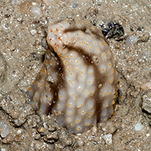
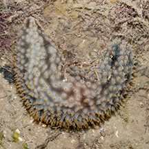
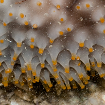

|
|
| sea cucumbers text index | photo index |
| Phylum Echinodermata > Class Holothuroidea |
| Plasticky
sea cucumber Cladolabes hamatus* Family Sclerodactylidae updated Apr 2020 Where seen? This large stiff sea cucumber feels rather plasticky. It is sometimes seen on our Northern shores half buried in silty sand among seagrasses. Features: 6-12cm long. Body rounded, usually U-shaped when just dug up, hard and stiff, smooth. Colour pale bluish or greyish with irregular darker blotchy lines along the body length. Evenly covered with lots of short stiff conical smooth tube feet with bright orange or yellow tips. Feeding tentacles thin bushy. |
 Half buried in silty sand. Changi, May 11 |
 Changi, Jul 10 |
 Tube feet short, stiff, conical with orange tips. |
| Plasticky sea cucumbers on Singapore shores |
On wildsingapore
flickr
|
| Other sightings on Singapore shores |
Links
|